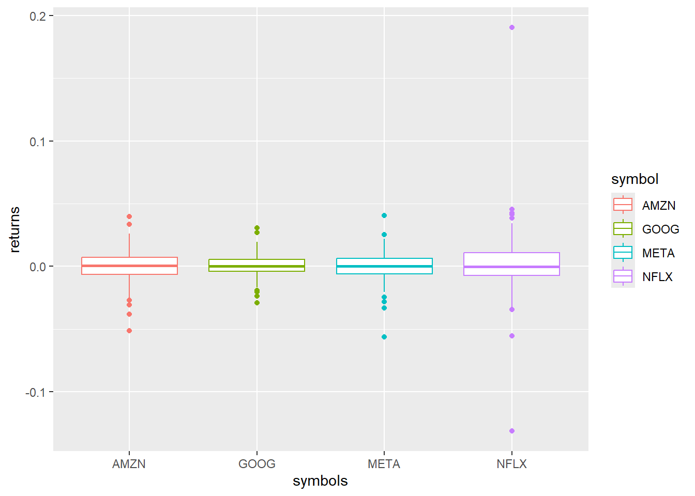
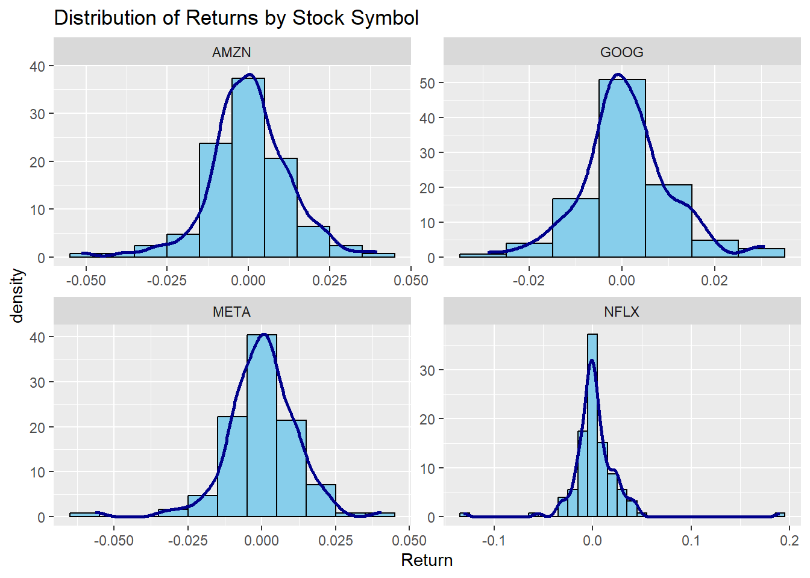
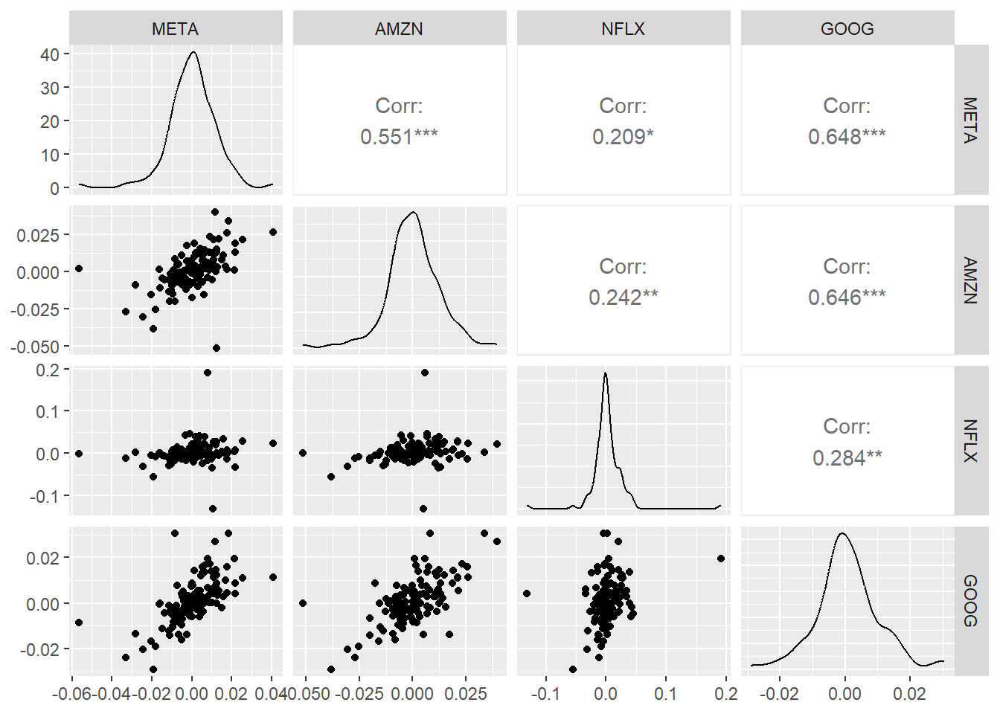

pacman::p_load(tidyquant, tidyverse, xts, timeDate, lubridate, writexl, broom, sandwich, lmtest, dplyr, tidyr, GGally)Scratch
For testing of code
data(FANG, package="tidyquant")# show the first 5 rows
FANG %>% slice(1:5)# A tibble: 5 × 8
symbol date open high low close volume adjusted
<chr> <date> <dbl> <dbl> <dbl> <dbl> <dbl> <dbl>
1 META 2013-01-02 27.4 28.2 27.4 28 69846400 28
2 META 2013-01-03 27.9 28.5 27.6 27.8 63140600 27.8
3 META 2013-01-04 28.0 28.9 27.8 28.8 72715400 28.8
4 META 2013-01-07 28.7 29.8 28.6 29.4 83781800 29.4
5 META 2013-01-08 29.5 29.6 28.9 29.1 45871300 29.1tbs1 <- tibble(
Date = seq(as.Date("2017-01-01"), length=3, by="months"),
returns = rnorm(3),
letters = sample(letters, 3, replace = TRUE)
)
tbs1# A tibble: 3 × 3
Date returns letters
<date> <dbl> <chr>
1 2017-01-01 -1.71 t
2 2017-02-01 0.966 a
3 2017-03-01 0.863 v # extract the returns column as vector
tbs1$returns[1] -1.7119117 0.9655451 0.8628949tbs1 %>% pull(returns)[1] -1.7119117 0.9655451 0.8628949tbs1[[2]][1] -1.7119117 0.9655451 0.8628949tbs1 %>% .[[2]][1] -1.7119117 0.9655451 0.8628949# vreate temporary file
tmp <- tempfile(fileext = ".csv")
write_csv(tbs1,file = tmp)
tbs1b <- read_csv(tmp)Rows: 3 Columns: 3
── Column specification ────────────────────────────────────────────────────────
Delimiter: ","
chr (1): letters
dbl (1): returns
date (1): Date
ℹ Use `spec()` to retrieve the full column specification for this data.
ℹ Specify the column types or set `show_col_types = FALSE` to quiet this message.dplyr::all_equal(tbs1,tbs1b) # only the factor levels differWarning: `all_equal()` was deprecated in dplyr 1.1.0.
ℹ Please use `all.equal()` instead.
ℹ And manually order the rows/cols as needed[1] "- Rows in x but not in y: 1\n- Rows in y but not in x: 1\n"# temporary file name
tmp <- tempfile(fileext = ".xlsx")
# write to Excel file
writexl::write_xlsx(FANG,path = tmp)
# read from Excel file and transform to date using mutate
FANG3 <- readxl::read_xlsx(tmp) %>% mutate(date=as.Date(date))
# check whether both datasets are similar
dplyr::all_equal(FANG,FANG3) [1] TRUE# data dimensions
dim(FANG)[1] 4032 8# names
names(FANG)[1] "symbol" "date" "open" "high" "low" "close" "volume"
[8] "adjusted"# carefully inspect the data
glimpse(FANG)Rows: 4,032
Columns: 8
$ symbol <chr> "META", "META", "META", "META", "META", "META", "META", "META…
$ date <date> 2013-01-02, 2013-01-03, 2013-01-04, 2013-01-07, 2013-01-08, …
$ open <dbl> 27.44, 27.88, 28.01, 28.69, 29.51, 29.67, 30.60, 31.28, 32.08…
$ high <dbl> 28.18, 28.47, 28.93, 29.79, 29.60, 30.60, 31.45, 31.96, 32.21…
$ low <dbl> 27.42, 27.59, 27.83, 28.65, 28.86, 29.49, 30.28, 31.10, 30.62…
$ close <dbl> 28.00, 27.77, 28.76, 29.42, 29.06, 30.59, 31.30, 31.72, 30.95…
$ volume <dbl> 69846400, 63140600, 72715400, 83781800, 45871300, 104787700, …
$ adjusted <dbl> 28.00, 27.77, 28.76, 29.42, 29.06, 30.59, 31.30, 31.72, 30.95…# information on the first three variables
FANG %>% select(symbol,date,open) %>% summary() symbol date open
Length:4032 Min. :2013-01-02 Min. : 22.99
Class :character 1st Qu.:2014-01-01 1st Qu.: 106.31
Mode :character Median :2015-01-01 Median : 335.67
Mean :2015-01-01 Mean : 382.70
3rd Qu.:2016-01-01 3rd Qu.: 581.47
Max. :2016-12-30 Max. :1226.80 # arrange, filter, mutate
FANG_ret <- FANG %>% group_by(symbol) %>% select(symbol,date,adjusted) %>%
arrange(date) %>%
filter(date>"2016-06-30") %>%
mutate(return=adjusted/dplyr::lag(adjusted)-1)
# show
FANG_ret %>% slice(1:2)# A tibble: 8 × 4
# Groups: symbol [4]
symbol date adjusted return
<chr> <date> <dbl> <dbl>
1 AMZN 2016-07-01 726. NA
2 AMZN 2016-07-05 728. 0.00333
3 GOOG 2016-07-01 699. NA
4 GOOG 2016-07-05 695. -0.00609
5 META 2016-07-01 114. NA
6 META 2016-07-05 114. 0.0000875
7 NFLX 2016-07-01 96.7 NA
8 NFLX 2016-07-05 97.9 0.0128 Regression
FANG_ret2 <- FANG_ret %>% ungroup() %>%
left_join(FANG_ret %>% group_by(date) %>% summarise(index=mean(return)),by="date") %>%
select(symbol,date,return,index)
FANG_ret2 %>% group_by(symbol) %>% slice(1:2)# A tibble: 8 × 4
# Groups: symbol [4]
symbol date return index
<chr> <date> <dbl> <dbl>
1 AMZN 2016-07-01 NA NA
2 AMZN 2016-07-05 0.00333 0.00254
3 GOOG 2016-07-01 NA NA
4 GOOG 2016-07-05 -0.00609 0.00254
5 META 2016-07-01 NA NA
6 META 2016-07-05 0.0000875 0.00254
7 NFLX 2016-07-01 NA NA
8 NFLX 2016-07-05 0.0128 0.00254FANG_ret2n <- FANG_ret2 %>% nest_by(symbol)
FANG_ret2n# A tibble: 4 × 2
# Rowwise: symbol
symbol data
<chr> <list<tibble[,3]>>
1 AMZN [127 × 3]
2 GOOG [127 × 3]
3 META [127 × 3]
4 NFLX [127 × 3]FANG_reg <- FANG_ret2n %>%
mutate(model = list(lm(return ~ index, data = data)))
FANG_reg# A tibble: 4 × 3
# Rowwise: symbol
symbol data model
<chr> <list<tibble[,3]>> <list>
1 AMZN [127 × 3] <lm>
2 GOOG [127 × 3] <lm>
3 META [127 × 3] <lm>
4 NFLX [127 × 3] <lm> FANG_reg %>%
summarize(tidy(model))Warning: Returning more (or less) than 1 row per `summarise()` group was deprecated in
dplyr 1.1.0.
ℹ Please use `reframe()` instead.
ℹ When switching from `summarise()` to `reframe()`, remember that `reframe()`
always returns an ungrouped data frame and adjust accordingly.`summarise()` has grouped output by 'symbol'. You can override using the
`.groups` argument.# A tibble: 8 × 6
# Groups: symbol [4]
symbol term estimate std.error statistic p.value
<chr> <chr> <dbl> <dbl> <dbl> <dbl>
1 AMZN (Intercept) -0.000389 0.000807 -0.482 6.30e- 1
2 AMZN index 0.810 0.0716 11.3 8.01e-21
3 GOOG (Intercept) 0.000253 0.000591 0.428 6.70e- 1
4 GOOG index 0.642 0.0524 12.2 4.60e-23
5 META (Intercept) -0.000525 0.000782 -0.672 5.03e- 1
6 META index 0.727 0.0694 10.5 8.76e-19
7 NFLX (Intercept) 0.000662 0.00151 0.439 6.61e- 1
8 NFLX index 1.82 0.134 13.6 2.35e-26FANG_reg %>%
summarize(glance(model))`summarise()` has grouped output by 'symbol'. You can override using the
`.groups` argument.# A tibble: 4 × 13
# Groups: symbol [4]
symbol r.squared adj.r.squared sigma statistic p.value df logLik AIC
<chr> <dbl> <dbl> <dbl> <dbl> <dbl> <dbl> <dbl> <dbl>
1 AMZN 0.508 0.504 0.00903 128. 8.01e-21 1 415. -825.
2 GOOG 0.547 0.543 0.00661 150. 4.60e-23 1 455. -903.
3 META 0.470 0.465 0.00875 110. 8.76e-19 1 419. -832.
4 NFLX 0.599 0.596 0.0169 185. 2.35e-26 1 337. -667.
# ℹ 4 more variables: BIC <dbl>, deviance <dbl>, df.residual <int>, nobs <int>FANG_ret2n %>%
mutate(model = list(bind_rows(coef(lm(return ~ index, data = data))))) %>%
unnest(model)# A tibble: 4 × 4
# Groups: symbol [4]
symbol data `(Intercept)` index
<chr> <list<tibble[,3]>> <dbl> <dbl>
1 AMZN [127 × 3] -0.000389 0.810
2 GOOG [127 × 3] 0.000253 0.642
3 META [127 × 3] -0.000525 0.727
4 NFLX [127 × 3] 0.000662 1.82 FANG_reg %>%
mutate(ci=list(as_tibble(confint(model),rownames="coef"))) %>%
unnest(ci) %>% select(-data,-model)# A tibble: 8 × 4
# Groups: symbol [4]
symbol coef `2.5 %` `97.5 %`
<chr> <chr> <dbl> <dbl>
1 AMZN (Intercept) -0.00199 0.00121
2 AMZN index 0.669 0.952
3 GOOG (Intercept) -0.000917 0.00142
4 GOOG index 0.538 0.745
5 META (Intercept) -0.00207 0.00102
6 META index 0.590 0.865
7 NFLX (Intercept) -0.00232 0.00365
8 NFLX index 1.56 2.09 FANG_reg %>%
mutate(lmHC = list(coeftest(model, vcov. = vcovHC(model, type = "HC1")))) %>%
reframe(broom::tidy(lmHC), .groups = "drop")# A tibble: 8 × 7
symbol term estimate std.error statistic p.value .groups
<chr> <chr> <dbl> <dbl> <dbl> <dbl> <chr>
1 AMZN (Intercept) -0.000389 0.000787 -0.495 6.22e- 1 drop
2 AMZN index 0.810 0.161 5.04 1.60e- 6 drop
3 GOOG (Intercept) 0.000253 0.000582 0.434 6.65e- 1 drop
4 GOOG index 0.642 0.0847 7.57 7.35e-12 drop
5 META (Intercept) -0.000525 0.000790 -0.665 5.07e- 1 drop
6 META index 0.727 0.147 4.94 2.47e- 6 drop
7 NFLX (Intercept) 0.000662 0.00146 0.455 6.50e- 1 drop
8 NFLX index 1.82 0.361 5.04 1.58e- 6 drop Plotting
FANG_ret %>% ggplot(aes(symbol, return)) + geom_boxplot(aes(color=symbol)) +
labs(x="symbols", y="returns")Warning: Removed 4 rows containing non-finite outside the scale range
(`stat_boxplot()`).
FANG_ret %>%
filter(is.finite(return)) %>%
ggplot(aes(x = return)) +
geom_histogram(aes(y = after_stat(density)), binwidth = 0.01, fill = "skyblue", color = "black") +
geom_density(lwd = 1, color = "darkblue") +
facet_wrap(~symbol, scales = "free") +
xlab("Return") +
ggtitle("Distribution of Returns by Stock Symbol")
p <- FANG_ret %>%
ungroup() %>%
select(date, return, symbol) %>%
pivot_wider(id_cols = date, names_from = symbol, values_from = return) %>%
filter(if_all(-date, ~ is.finite(.) & !is.na(.))) %>%
select(-date) %>%
ggpairs()
p
tq_exchange_options()[1] "AMEX" "NASDAQ" "NYSE" amex <- tq_exchange("AMEX")Getting data...Warning: Failed to retrieve data for exchange 'amex'. Failed to perform HTTP
request.saveRDS(amex, "amex_data.rds")
nasdaq <- tq_exchange("NASDAQ")Getting data...Warning: Failed to retrieve data for exchange 'nasdaq'. Failed to perform HTTP
request.saveRDS(nasdaq, "nasdaq_data.rds")
nyse <- tq_exchange("NYSE")Getting data...Warning: Failed to retrieve data for exchange 'nyse'. Failed to perform HTTP
request.saveRDS(nyse, "nyse_data.rds")